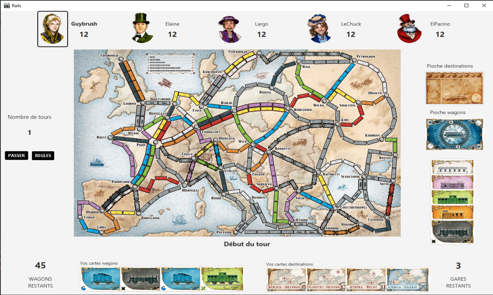

Les aventuriers du rail est un jeu que j'ai développé en équipe de deux personnes, en utilisant Java et FXML. Le principe du jeu est de créer des chemins de fer pour relier différentes villes en utilisant des cartes de wagons et des cartes de destination.
Au cours du développement de ce projet, nous avons rencontré plusieurs défis techniques et créatifs. Nous avons dû réfléchir à la manière de gérer les déplacements des joueurs, la distribution des cartes et le placement des pièces sur le plateau de jeu. Nous avons également dû concevoir une interface utilisateur intuitive et agréable à utiliser pour que les joueurs puissent facilement naviguer dans le jeu.
L'un des plus grands défis que nous avons rencontré était de trouver un équilibre entre la complexité du jeu et la facilité d'utilisation pour les joueurs. Nous voulions que le jeu soit suffisamment complexe pour offrir une expérience de jeu enrichissante, mais pas trop compliqué pour que les joueurs puissent facilement comprendre les règles.
Travailler sur ce projet m'a apporté de nombreuses compétences, notamment la résolution de problèmes, la collaboration en équipe, la gestion de projet et l'utilisation de différentes technologies de développement. Cela m'a également donné une expérience pratique en matière de développement de logiciels, ce qui m'aide maintenant dans mes projets futurs.
En fin de compte, l'Aventurier du Rails est un projet qui m'a permis de mettre en pratique mes compétences de développement de logiciels, de travailler en équipe et de résoudre des problèmes complexes. Je suis fier de ce projet et je suis reconnaissant pour les leçons qu'il m'a enseignées.